When Sail Bot encounters headwinds, it turns to avoid them. Unlike the previous bots with DPDT switches that change direction only when they press their own levers, Sail Bot momentarily changes direction only when wind activates its lever. In other words, when there is a gust of wind, the bot turns to avoid it; otherwise, Sail Bot goes about its business. Although it may seem simple, this behavior is actually fairly complex, considering that the circuit, in a sense, is just a collection of switches.
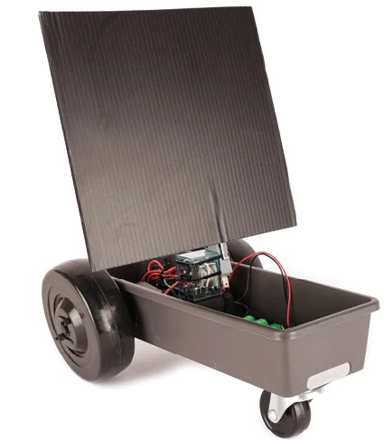
Tools and Supplies
- Two continuous-rotation servo motors with the controllers removed
- A 4 × 9½ × 2-inch plastic utensil holder
- A 4 × AA battery holder
- Four AA batteries
- A 6 V DPDT relay
- Relay socket
- Two 3-inch casters
- A 1½-inch swivel caster
- One 8 × 8-inch corrugated plastic sheet
- Drill
- A 1/8-inch drill bit
- A 3/4-inch spade bit
- Wire cutter
- Wire stripper
- Roll of stranded wire
- Screwdriver
- Marker
- Pliers
- Ruler
- Assorted zip ties
Sail Overview
To build Sail Bot, you first need to modify two continuous-rotation servos for direct drive by removing their controller boards (Chapter 4) or use two geared motor alternatives, as outlined in Appendix A. Next, you’ll mount the servos to the inside of the utensil holder. From there, you’ll attach the swivel caster to the bottom of the utensil holder. You’ll wire up the circuit to the relay socket (or directly to the relay) and install it in the utensil holder. Then you’ll construct the sail mechanism and firmly attach it to the relay. Finally, you’ll attach the wheels to the servos and insert batteries to make the bot go.
Constructing Sail
Step 1. Remove the wheels from the 3-inch caster frames by undoing the nuts and bolts holding them onto the frames.
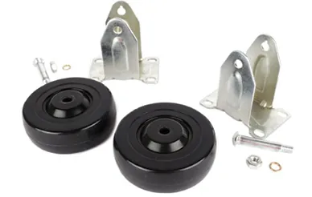
Step 2. Widen the second-from-last hole in each end of the servo horns using a 1/8-inch drill bit.
Step 3. Undo the mounting screws to remove the servo horns from the servos. Set the screws aside for later.
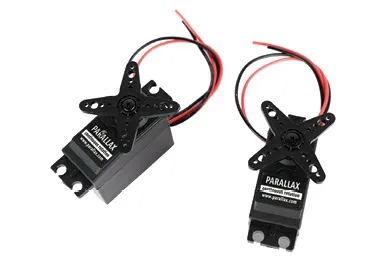
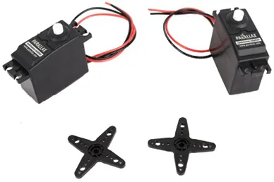
Step 4. Center a servo horn on each wheel and use a thin screwdriver to press marks into the frame of each wheel to use as drill guides.
Step 5. Use the indents you just made as guides to drill 1/8-inch holes straight down through the wheels.
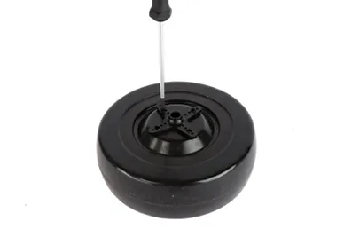
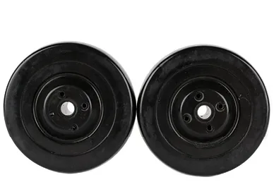
Step 6. Zip-tie the servo horns to the wheels and trim away the remaining tails.
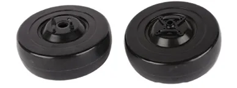
Step 7. Insert the DPDT relay into the socket simply by pressing it down firmly.
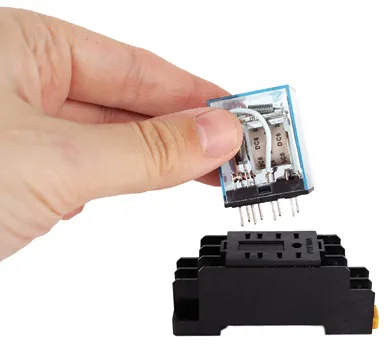
Step 8. On the outside of the utensil holder, position a servo motor on one of the bottom corners of the long edge, with the servo shaft facing inward. Make marks to represent each of the servo’s mounting holes and the servo shaft. Mirror this on the opposite side of the utensil holder.
Step 9. Drill the outer marks for the servo mounting holes with a 1/8-inch drill bit and then drill the center servo shaft marks with a ¾-inch spade bit.
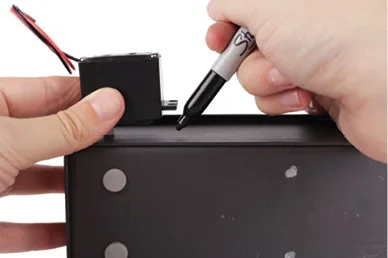
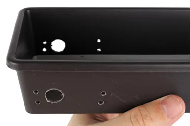
Step 10. Place the servos on the inside of the utensil holder, zip-tie them firmly into place, and then trim the remaining zip-tie tails.
Step 11. Place the 1½-inch caster on the bottom of the utensil holder on the end opposite from the servo motors. Make marks in each of the caster’s mounting holes.
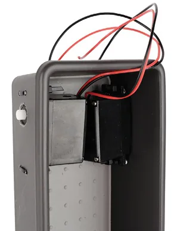
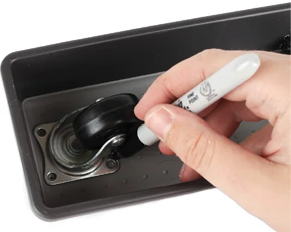
Step 12. Drill each mark with a 1/8-inch drill bit.
Step 13. Zip-tie the 1½-inch caster to the underside of the utensil holder.
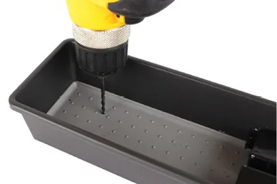
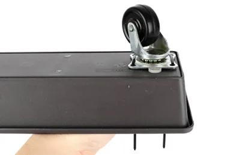
Step 14. Solder a 6-inch black wire to the common connection of the switch and a 6-inch red wire to the normally open (NO) connection.
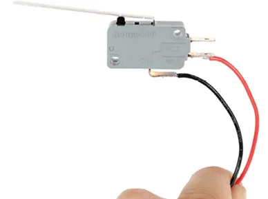
Step 15. Next, wire the circuit using the following diagram as a reference. You can learn more about how this circuit works in Appendix A on page 160.
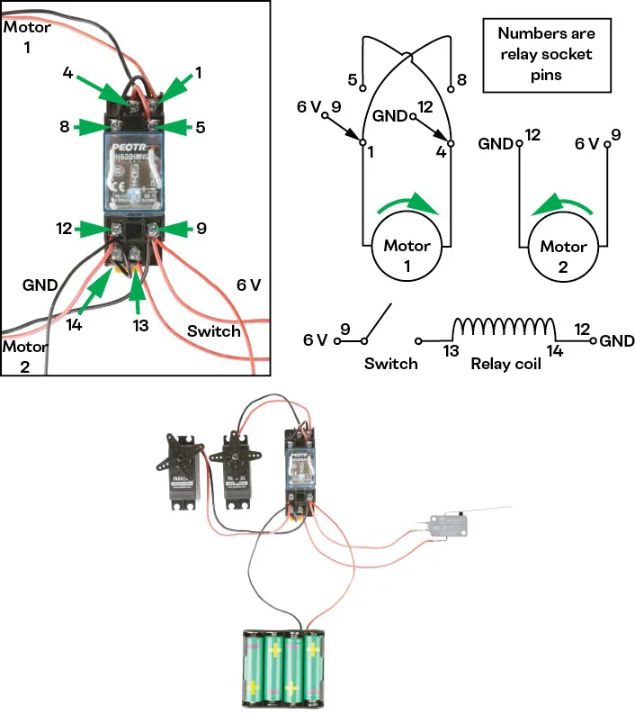
Step 16. Insert batteries briefly to test the circuit.
If your motors are spinning backward from how you expected, reverse the connection of the motor wires to the relay.
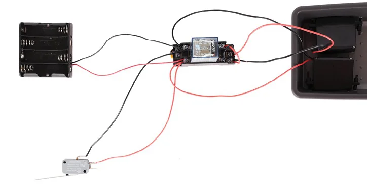
Step 17. Place the DPDT relay socket in the bottom of the utensil holder near the servos.
Make two marks on each side of the DPDT relay socket, creating four marks in all, that you’ll use to zip-tie the socket in place.
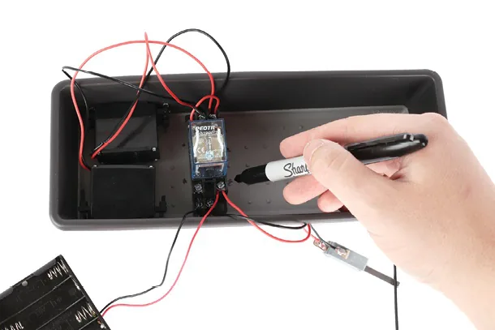
Step 18. Drill each of the four marks for mounting the DPDT relay with a 1/8-inch drill bit.
Step 19. Secure the relay socket in place using zip ties and the mounting holes.
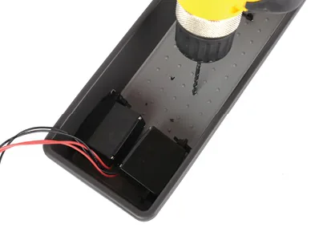
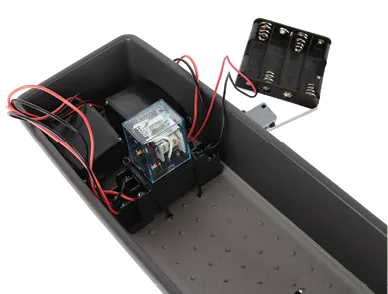
Step 20. The corrugated sheet will be used as a sail. Slide the snap-action switch’s lever into one of the center openings in the corrugated sheet until it is firmly in place.
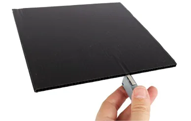
Step 21. Zip-tie the switch to the side of the relay such that the sail is facing toward the front of the bot (the side with the small caster).
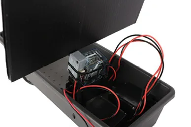
If the sail is too heavy for the switch and keeps it compressed, you can either cut the sail smaller or lean the switch forward a little bit.
Step 22. Attach the 3-inch wheels to the servos using the servo horns’ mounting screws.
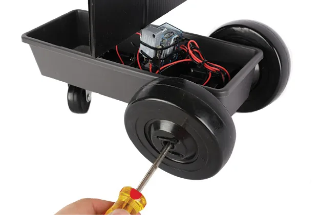
Step 23. Insert the batteries into the battery holder and watch the bot set sail.
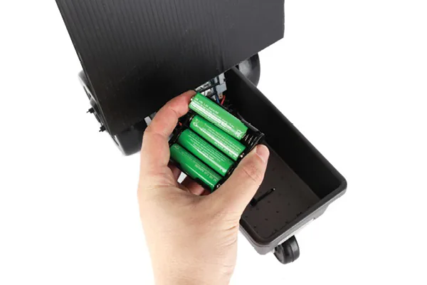
When wind blows the sail, one wheel should spin in the opposite direction and cause the bot to rotate away from the wind. Once the bot has turned away from the wind, the bot will resume driving forward.